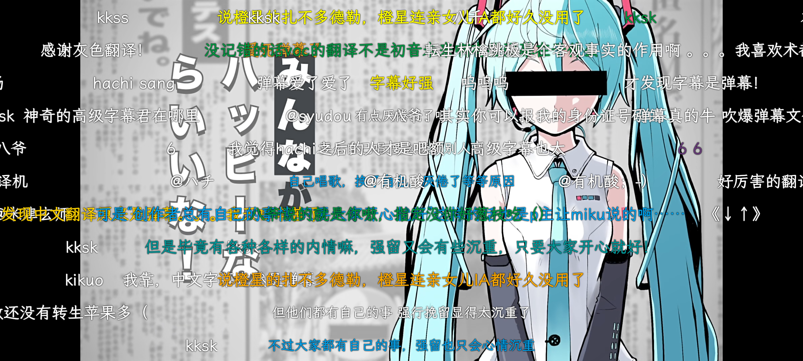
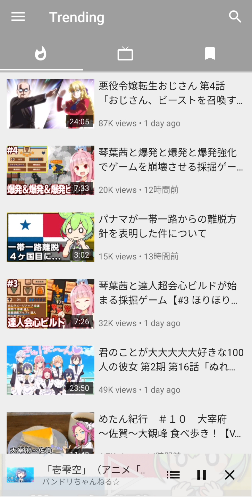

PipePipe 从 0 到能刷能下，五分钟搞定这个不登录的视频客户端
还在纠结装不装 Google 服务？PipePipe 让你不用登录就能看 YouTube、哔哩哔哩和 Niconico，隐私、订阅、下载一站式搞定，这篇带你从完全不懂到跑通。
这篇能带你从完全不懂到用起来，不需要任何基础——只要你手里有一台安卓手机，跟着下面几步走就行。
你可以把 PipePipe 想成一个「不用出门的视频遥控器」：平时刷视频总要装这个 App 那个 App、每个都要登录账号、还得忍受中间插出来的广告片。PipePipe 不一样——它一个应用就能同时看好几个平台，不用登录账号就能看，不依赖 Google 官方接口，而且完全开源、没有广告、不收集数据。代码按 GPL-3.0 开源，订阅历史全部留在你手机本地，不会被推荐算法喂饭。

它到底是干嘛的
说直白一点，PipePipe官网上介绍得很清楚——这是一个给安卓手机用的开源视频客户端。它的原型叫 NewPipe，是一个老牌子的开源客户端，PipePipe 在它的基础上「重新想象了一遍」——更快、更稳、功能更多。
它能干的事不少，挑几个最实用的：后台放视频像音乐播放器那样锁屏继续响、自动跳过赞助片段（集成 SponsorBlock）、恢复 YouTube 点踩计数、屏蔽 Short 短视频不让算法给你推碎碎念、纯时间线订阅流不被推荐算法打乱顺序、整个频道或播放列表批量下载。
适合什么人？手机里没装 Google 服务框架但想看 YouTube 的人；想一个 App 同时刷 YouTube、B站、Niconico 的多平台观众；讨厌片头中插推广的重度观众；把订阅当核心、不想被算法喂饭的用户；关心数据去向、希望隐私留在本机的敏感用户。
五分钟上手
从拿到安装包到第一次刷视频跑通，不超过五分钟。一步一步来：
第一步：拿到安装包。 PipePipe 不上架 Google Play，安装包从官方下载拿就行。它有四个更新渠道——GitHub Releases 最快、Obtainium 自动提醒、F-Droid 和 IzzyOnDroid 作为同步仓库。第一次装的话随便选一个，选定后就固定用，别混着追，节奏不一样容易晕。拿到 APK 后直接点，允许「未知来源」安装就行。
第二步：第一次打开。 打开后它会问你要哪些权限——存储和通知，正常给就好。然后是语言选择，挑你顺手的。主界面一上来就是一个搜索框，旁边一排平台入口：YouTube、哔哩哔哩、Niconico 等等。点哪个就进入哪个站的搜索页，和你平时在浏览器里搜东西没区别。

第三步：搜一个视频，点播放。 搜完结果出来后，点进去就是视频播放页。这里你有两个选择：直接点播放按钮在应用里看，或者点右下角的 Download 按钮把视频或音频下到本地。就是这么简单，没有额外的登录门槛，也不会弹「请先绑定账号」。
到这里就算跑通了。剩下的就是慢慢摸它还有什么好用的东西。
上手后先玩这三个功能
刚装好别乱点设置，先把这三个摸清楚——你会发现日常用得上的功能都在这几个地方。
订阅时间线：脱离算法的纯按时间排序
你会发现：它的订阅流不是按「推荐指数」排的，而是纯按上传时间排序。谁先发的谁在上面，没有算法在背后偷偷给你换顺序。想关掉推荐算法的朋友，这一个功能就值了。订阅分组也能建，把你关注的 UP 主按类型分成几组，刷的时候只看某一组。
下载对话框：视频还是音频、格式、线程数都能选
找到下载按钮点一下，会弹出一个对话框——文件名默认取视频标题、Video 和 Audio 二选一（选 Audio 就是只抽音频流，体积小一个量级，适合当播客存）、格式档位列出当前视频可用的具体分辨率和预估体积、Threads 滑杆调节下载并发数（一般 3 左右够用，太高可能被限速）。视频和音频的下载目录可以分开指定，在设置里改。更多下载参数和高级玩法可以去PipePipe文档里翻。
SponsorBlock：自动跳过赞助片段和订阅请求
你会发现：YouTube 视频里原本插的赞助段、片头片尾推广、订阅请求提示，PipePipe 都能自动跳过。这个功能默认开着，不用你手动去开开关。如果某次跳错了或者没跳，去设置里找 SponsorBlock 那一页，可以自己调整跳过规则。
小白的三个常见疑问
Q1：视频默认分辨率在哪里改？会不会太费流量？在 Settings → Player → Default resolution 里，从 144p 到 2160p 全档位可选，默认是 720p，大多数场景够用。同一页还有一个 Limit resolution on mobile data 开关——不在 Wi-Fi 时自动切到指定档位，默认 480p，流量下省一档、Wi-Fi 下用默认值，两头都顾上。悬浮窗的默认分辨率单独一个设置位，默认 480p，小窗本来就看不清细节，保持默认就是最优解。
Q2：下载失败或者下到一半停了怎么办？下载与播放是两条独立的路径——能放不等于能下，能下不等于能放，出问题时分开定位。线程数太高可能被服务端限速甚至拒接，先把 Threads 滑到 3 试试。HLS 直播式的流下载和普通渐进式流不一样，遇到「下下来不能拖动进度」这类情况，先确认流的类型，别急着当文件损坏处理。
Q3：更新的时候选哪个渠道？稳定版和预发布版有什么区别？GitHub Releases 节奏最快、跟着源头走；Obtainium 自动提醒适合想省脑子的人；F-Droid 和 IzzyOnDroid 有同步延迟、适合习惯用仓库客户端管理应用的人。选定一个就固定用，别混着追。应用内自带更新检查，入口在 Settings → Updates，可以手动检查也可以订阅预发布版提醒——但预发布版是用来测试特定改动的构建，不一定比已装的稳定版「更新」，日常用就认稳定版就好。
PipePipe 的开源社区维护得很勤快，安装指南、功能说明和排障手册都在持续更新；源码和配套资料在GitHub、Gitee、GitCode三个仓库同步更新，国内外访问都方便。如果你正在找一款不折腾账号、不装 Google 服务也能刷视频的手机客户端，它值得占一个桌面角落。进阶方向也很明确——试试后台音频播放、AV1 和 VP9 高级编解码、或者整个频道的批量下载，你会发现日常观看的效率能提一大截。